Child Hero Timeline
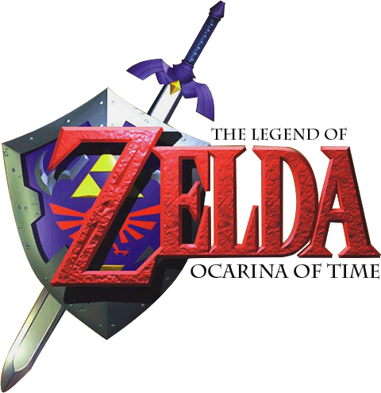
Ocarina of Time cont.
When Ganondorf laid his hands upon the Triforce, the sacred power split into its three parts, and only the Triforce of Power remained in Ganondorf's hands
Without a strong and righteous mind, Ganondorf could not control the power of the gods, and so he was felled by Link's hand. The Sages of the Elements, their power restored by Link in the future, cast the evil incarnation of darkness into the void of the Evil Realm that had been the Sacred Realm before becoming stained by Ganondorf's evil. Princess Zelda herself then seals the gateway, and thus, Ganondorf the dark lord vanishes from Hyrule.

Zelda instructs Link to lay the Master Sword to rest and close the Door of Time, closing the road between times, and she sends him to his original time. After Link goes back to his original time, he retains knowledge about Hyrule's fate. With this information, he visits Princess Zelda in order to prevent such a fate from ever occurring. Link, who traveled through time to save the land, would be forever known in legend as the Hero of Time.
We now follow the fate of Hyrule that knows of young Link's success...
Majora's Mask
Majora's Mask opens with a scene of Link leaving the land of Hyrule on a personal quest. His trip is interrupted by the Skull Kid, an imp possessed by evil contained in Majora's Mask, which he wears after having stolen it from another traveler. The Skull Kid knocks Link unconscious, making him fall off his horse, and steals the Ocarina of Time. When Link awakens, the Skull Kid takes off and leads Link on a chase.
When Link eventually catches up with the Skull Kid, he uses the dark magic of Majora's Mask to transform Link into a Deku Scrub. He then leaves Link, alone in the forest. With limited abilities, Link enters Clock Town where he meets the Happy Mask Salesman. The Mask Salesman reveals that the Skull Kid stole Majora’s Mask from him and that he can return Link to his human form if he finds the Ocarina of Time and Majora's Mask. He warns Link though, that he must leave in three days, and Link must retrieve the Mask and the Ocarina by then. Link then sets off in his Deku form, finding himself in the parallel world of Termina.

Link is able to find the Skull Kid, hanging around the top of the enormous Clock Tower from which Clock Town's name is derived. Also in his search, Link hears rumors and whispers of the Moon steadily growing closer to the Town as Skull Kid pulls it out of its orbit. At midnight on the Final Day before the Mask Salesman's departure, Link is able to reach the top of the Clock Tower for a face off with the Skull Kid. Upon arriving, Tatl (the fairy traveling with Link) demands that the Skull Kid give back Link's Ocarina. Seemingly not hearing, Tael (a fairy traveling with the Skull Kid) delivers an enigmatic warning to Tatl, to find four beings from the "swamp, mountain, ocean and canyon."
The Skull Kid, in response to Tael's outburst, hits the Fairy aside. He then laughs about how even if "they" were to come, they could not stop him. He then points Link and Tatl's attention to the hideous Moon and challenges them to stop it from falling. Taking advantage of this, Link fires a magic bubble, a skill learned earlier, at the Skull Kid, causing him to drop the Ocarina of Time. On picking it up, memories of his departure from Hyrule flood back to Link. In them, Princess Zelda tells him that the Goddess of Time is watching over him. After being snapped out of this reverie by Tatl, Link plays the "Song of Time", and is immediately thrown back to the morning that he first entered Clock Town, three days prior.
Link heads back to the Happy Mask Salesman, who teaches him the "Song of Healing". Playing this song returns Link to his regular self, with the only remnants of his time as a Deku being a Mask, which he can don to become Deku Link once again. After aiding Link, the Mask Salesman asks that Link uphold his part of the bargain and return the Mask that the Skull Kid stole. Upon learning that Link could not recover the Mask, the Salesman again requests that Link recover the Mask, stating that he believes that Link can do it.
To stop the Skull Kid, Link and Tatl work on the only clue they have; the four places stated by Tael. Upon venturing into the Southern Swamp, Link and Tatl find themselves facing a sorrowful and powerful Giant. Tatl then surmises that the Giant was one of the "four" that Tael spoke of, as Link learns the "Oath to Order". The two head to Snowhead Mountain, the cursed Great Bay, and Ikana Canyon to save the other three Giants.
He then ventures to the Clock Tower at the end of the Final Day, summoning the Four Giants with the "Oath to Order" to stop the Moon. Even though the Giants hold back the Moon, Majora's Mask leaves the Skull Kid, who passed out at the Giants' coming, and rises into the Moon. There, the Mask possesses the Moon and attempts to consume all of Termina. Link follows the Mask inside, finding a surreal field, in which there is a tree and five children. After talking to the child who wears Majora's Mask, Link then proceeds to face the demon. After a harsh battle, Link destroys the spirit, and the Moon is destroyed.
When Link comes to the "Dawn of a New Day", he learns that the Skull Kid and the Four Giants had once been friends. The Skull Kid also remarks how Link smells like a kid who taught him a song in the forest, clearly implying that this is the same Skull Kid to whom Link taught "Saria's Song" in Ocarina of Time. The Happy Mask Salesman states that the evil has left Majora's Mask, and then, mysteriously, disappears, bidding Link a fond farewell. Tatl then tells Link that he should get back to his original quest, and the two part ways. The story ends with Link riding off into the forest once more, and "Saria's Song" echoes about a carving of Link, the Skull Kid, the Fairy siblings, and the Four Giants.
Whew...that was a long story. Moving along shall we?
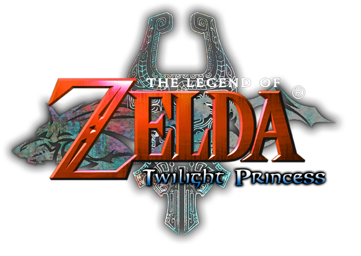
Twilight Princess
Link, a young adult at the beginning of the game, is a ranch worker in his home town of Ordon Village in the Ordona Province of Hyrule. Strange beasts begin to appear in the forest outside of the village just before Link is supposed to make a trip to Hyrule Castle to present a gift to the royal family. The next day, Link is attacked by Bulblins and their leader King Bulblin and falls unconscious in the Spirit Spring near Ordon Village. When he awakens, he follows the pathway into the forest, whereupon he sees a large black wall draped over the ground. Approaching the wall, symbols begin to appear upon it, and as he nears closer a large and menacing black hand reaches out and pulls him through the wall into the darkness within.
A sharp pain runs through him and he doubles over. The Triforce symbol on his hand glows, and his entire body transforms into a wolf. As Wolf Link, he is captured and held prisoner within the boundaries of Hyrule Castle, which has been covered by the twilight that spread over Hyrule. In his prison cell he encounters Midna, a rogue shadow Imp with mysterious powers, who aids his escape and helps him explore the castle in his wolf form.
In the tallest tower, he and Midna find a cloaked young woman. Immediately she explains to Link how Hyrule came to be shrouded in twilight, and reveals her true identity: Princess Zelda. Although in another world, Zelda is still the princess of Hyrule.
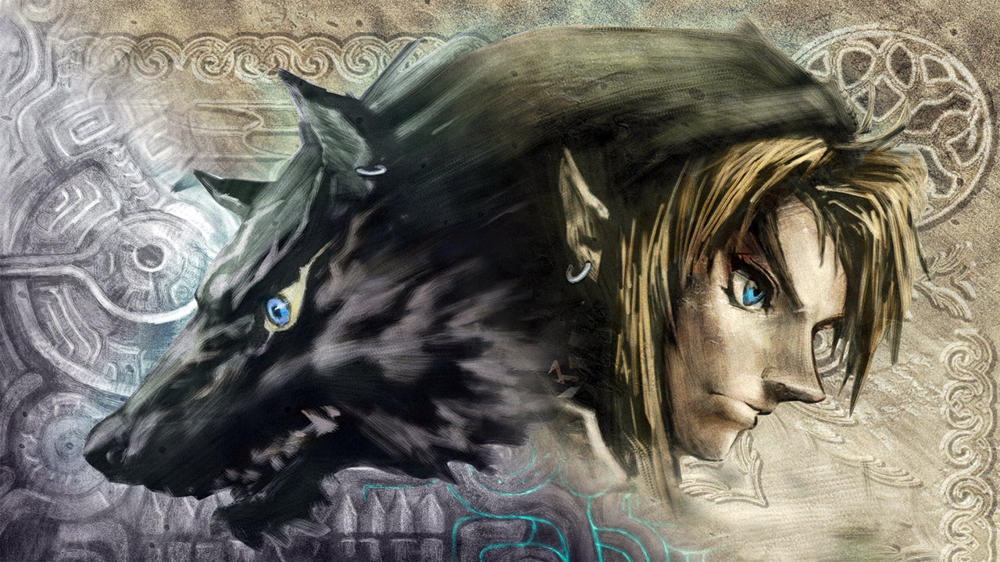
It is now Link's quest to save Hyrule from the Twilight as the hero chosen by the gods. He must restore the light to all the lands in Hyrule and collect mysterious dark artifacts known as Fused Shadows in order to gain enough strength to defeat the one who rules the Twilight.
After Link and Midna collect the Fused Shadow they are confronted by Zant, who heavily injures Midna and causes Link to be stuck in his Wolf form. After meeting up with Zelda, Midna is brought back from the brink of death when Zelda transfers her soul and powers to Midna's body. Zelda does this at her own expense, and disappears as a result. With a newly restored Midna, Link travels to the Sacred Grove to retrieve the Master Sword, breaking his curse as a wolf, and allowing him to transform between Hylian and wolf form at his own will.
With his newly enhanced ability Link and Midna go in search of the Mirror of Twilight, an item required to travel to the Twilight Realm, the domain of Zant. After going through great trouble in Arbiter's Grounds, a location in Gerudo Desert, when Link and Midna went to retrieve the mirror, they realize that Zant had broken it into four shards, with only one shard on the Grounds. In addition to this tremendous knowledge, the Sages reveal that they had sentenced Ganondorf to death, and had gone as far to impale him through the chest with the Sword of the Sages. However, through some "divine" fluke, he had previously received the Triforce of Power, which allowed him to survive the execution. He then used the power of the Triforce to kill the Sage of Water, break free from his chains, and pull the Sword of the Sages from his chest, leaving behind a glowing wound that stays with him forever.
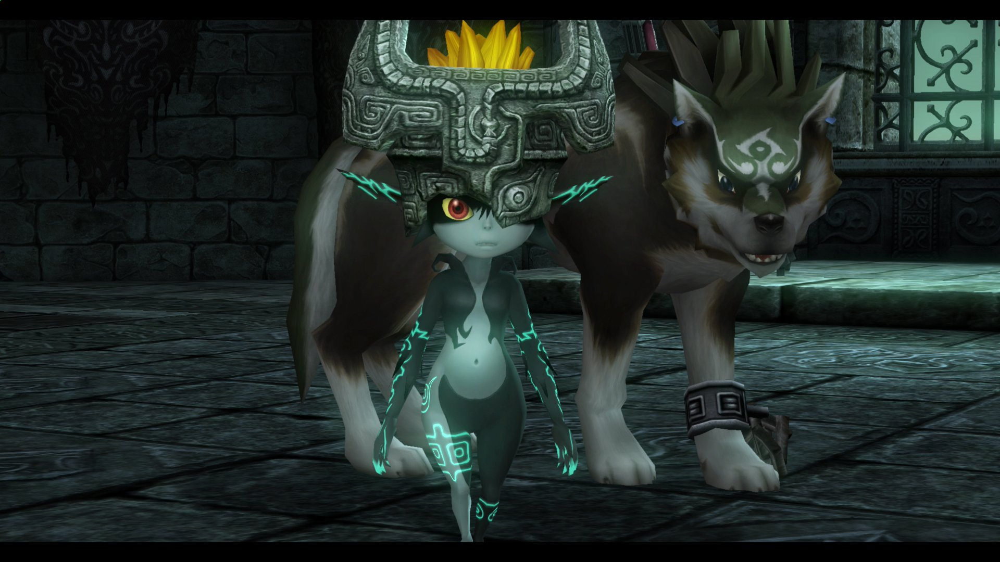
With the last of the sages' power, they activated the Mirror of Twilight and banished Ganondorf into the Twilight Realm, and so he waited for a way out. He soon found his chance of escape in Zant, acting as a "god", and influencing him to become an assistant for his evil desires. Using a misguided Zant, Ganondorf found a way to seek his revenge on Hyrule. The Sages task Link and Midna with the duty of repairing the Mirror of Twilight and defeating Ganondorf. The duo then travels across unexplored zones of Hyrule in search of the missing fragments.
Link and Midna restore the mirror and use it to enter the Twilight Realm and defeat Zant. With him defeated, they return to Hyrule and, with the regained Fused Shadows, Midna breaks the seal surrounding the castle. It is in the castle where Link battles and defeats Ganondorf. This releases the curse on Midna, turning her from an imp to her true form. She then returns to the Twilight Realm and also shatters the Mirror of Twilight, breaking the only known gateway between the two worlds.
Link returns the Master Sword to the Pedestal of Time, and the children of Ordon Village also return home to their families. Much later, Fado attempts to seek help from Link for his ranch by calling through his house, but the house remained empty. Link does not stay, he rides away with Epona from there, equipped with just his shield, while his friend Ilia was witnessing his leaving from his hometown. Where Link is headed is unknown, but it is assumed that he is seeking another way to the Twilight Realm to see his friend once more. At the very end, the Throne Room of the Hyrule Castle is seen, revealing that the Castle was rebuilt.
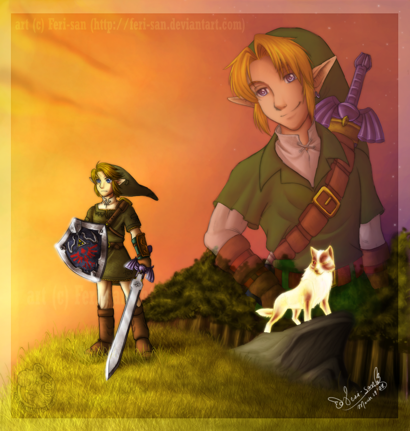
Throughout his adventure, Link will be guided by the ghost of a past hero. This ghost is confirmed to be the specter of "the hero of time" who is aiding his desendant in his journey. Firmly reminding us that every single Link is different from the others.
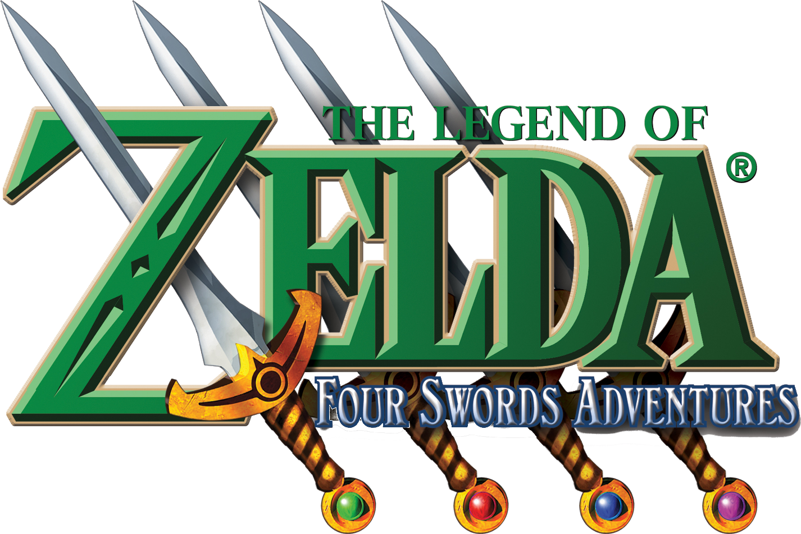
Four Swords Adventures
Not to be confused with the previous "Four Swords" title in the earlier era.
One night, an ominous cloud covers Hyrule, throwing fear into the people. Princess Zelda calls upon her most trusted childhood friend, Link. She wants to check up on the Four Sword, fearing that the seal that imprisoned the evil wind sorcerer Vaati inside of it at the end of Four Swords might have weakened. Inside the castle they meet up with the gathered six Maidens, whose purpose is to protect Hyrule as well as the Four Sword Sanctuary. With the help of the maidens Zelda summons a portal to the sanctuary.
However, before they get a chance to enter, a dark figure that looks like Link appears. Shadow Link seals away the six maidens and Zelda in a dark crystal, before he retreats into the portal leading to the sanctuary. Link is left with no choice but to follow. Arriving at the sanctuary, Shadow Link taunts Link into pulling the Four Sword, resulting in Link splitting into four copies of himself. Likewise, the seal on Vaati is broken, and he slowly creeps forward with a maniacal laugh. The four Links do not get a chance to follow Shadow Link before being thrown away from the scene by Vaati’s magic.
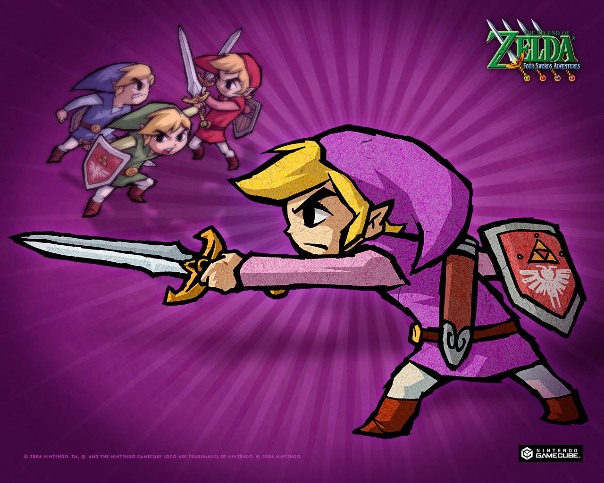
The four Links are awoken by a wise old owl, who calmly informs them of the situation and what they must do, which is to first rescue the six maidens. Traveling across Hyrule they witness the chaos brought about by Vaati and Shadow Link, and in order to release the dark seals placed by Vaati the four Links must collect force gems in order to properly power up the Four Swords and grant it the power to repel evil.
After rescuing the Green maiden, she tells the four Links about the four Royal Jewels which is needed to reach the in Realm of the Heavens, where Zelda is being held. They were divided among four Knights of Hyrule, known to have valiantly defended Hyrule, but they have mysteriously disappeared. The four Links eventually find them, who reveal they have been cursed and thrown in the Dark World.
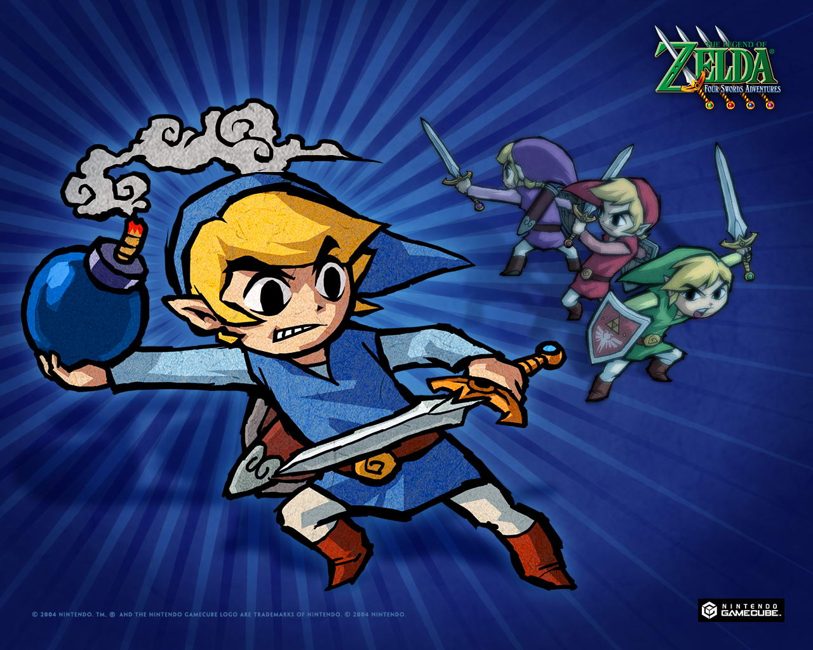
It is revealed that the one who is ultimately behind everything is a mighty foe who is not Vaati, but rather, someone using him. Once the four Links reach the part of Hyrule which has been transformed into the Dark World, they discover from the White Maiden that there was once a Dark Mirror in which an ancient tribe was sealed. The mirror was being kept away from the world in a "forest temple". They believe the mirror to be the source of the Shadow Links. Rumors also reach them of a King of Darkness named Ganon.
Upon reaching the temple where the mirror is being held, their suspicion is confirmed, as the Mirror has indeed been stolen. The Red maiden who is rescued there, reveals that she knows of a man named Ganondorf of the Gerudo tribe, but finds it unlikely that he is the cause of the recent events. Traveling to the desert, they find out from the peaceful Gerudo tribe that Ganondorf recently flouted their laws and left for the sacred pyramids. Following his footsteps, it is revealed that Ganondorf had obtained a powerful ancient weapon which would make him a King of Darkness.
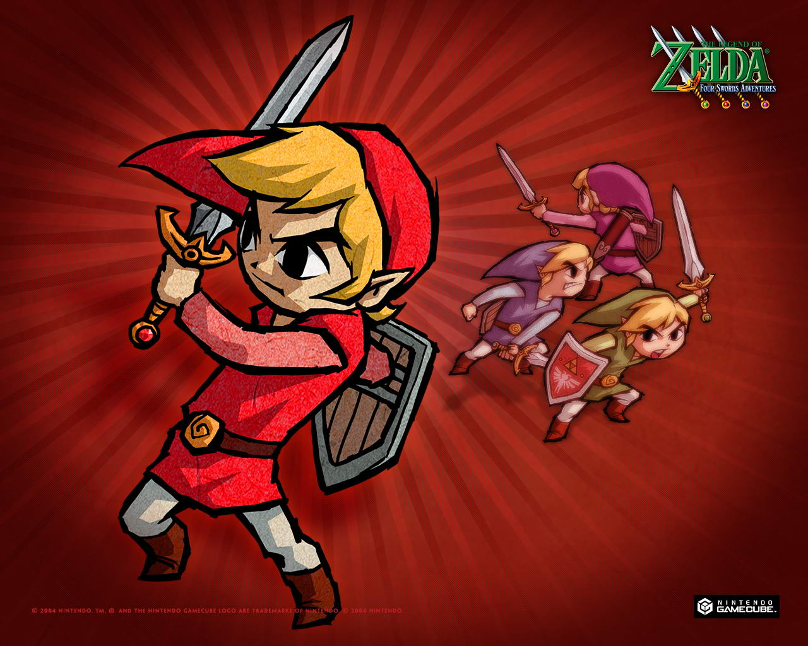
After rescuing all six maidens,the four Links heads towards the Tower's location which has been cursed by the power of darkness, making it Frozen Hyrule. Pushing through the snow storm, they liberate the final Knight, who gives them the last of the Royal Jewels. The Tower of Winds is called forth using the power of the jewels, giving the party entry to the Realm of the Heavens. Once the party has climbed the Tower, Princess Zelda is finally rescued. In the Realms of the Heavens, the four Links makes their final battle with their dark doppelganger, Shadow Link, as they secure the Dark Mirror. Princess Zelda uses her power to create a rainbow bridge, allowing them to enter the Palace of Winds.
Inside, they encounter Vaati, and after a great battle, they defeat him. With Vaati gone, the Palace of Winds starts to collapse, as it relied on his magic to keep itself in the sky. The party retreats back to the Tower of Winds. Once there, Ganondorf mocks Vaati attempting to stop them. Just before reaching the exit, the floor beneath them collapses, and they fall into a dark room. Ganondorf then appears as a patch of darkness. Zelda tries to seal him away but fails, and once again Zelda is taken captive. Assuming the shape of a pig and the final battle between the four Links and Ganon commences. Midway through the battle, Zelda is freed, and together they defeat Ganon. With the combined power of the six maidens, Ganon is ultimately sealed away in the Four Sword.
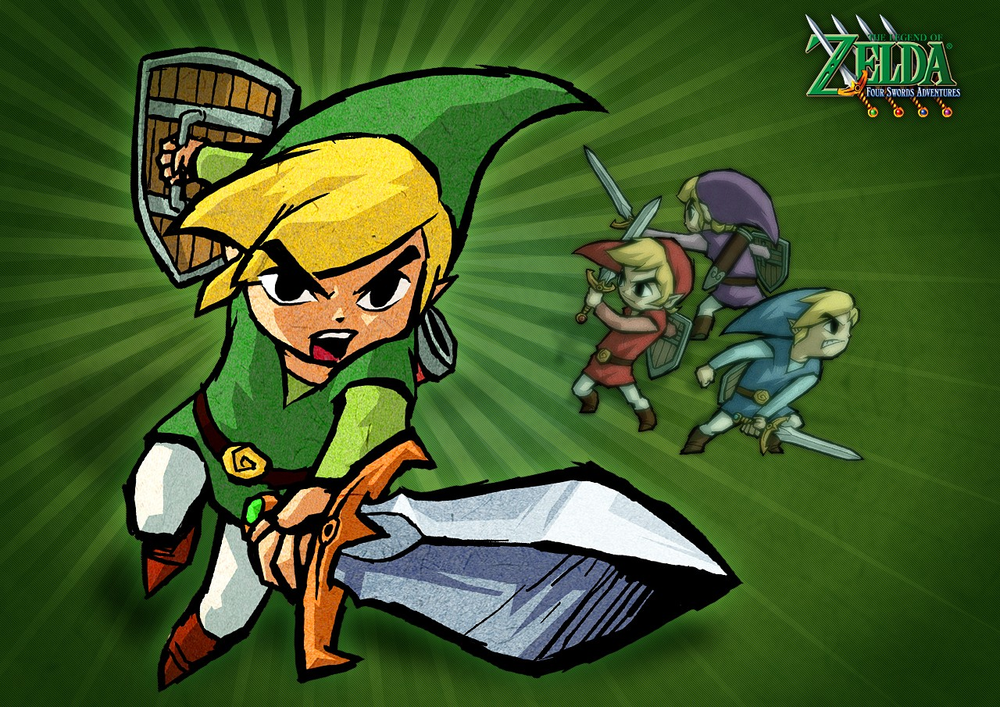
In the aftermath of the journey, the Four Sword is laid to rest again in the Four Sword Sanctuary, and the four Links join back into one single Link. The six maidens and Zelda form a pyramid-like barrier around the Sword so that no one might touch it again. Outside the castle, celebration is at hand, signaling peace, and Link seem to be greeted by the crowd as a true hero.

Breath of the Wild
Link awakens from a deep sleep and a mysterious voice guides him to discover what has become of the ruined Kingdom of Hyrule. Link meets an Old Man, who turns out to be the spirit of the deceased King of Hyrule. Link learns from the King that 100 years prior, a great evil known as the Calamity Ganon rose up and laid waste to the kingdom and its people.[2] Unable to be defeated, it was sealed within Hyrule Castle, while the ruins of the land were ravaged by nature over time. Although trapped, the Calamity Ganon has grown in power, and Link must defeat it before it breaks free once more and destroys the world.
After escaping the confines of the Great Plateau, Link is encouraged to meet the wise Sheikah elder Impa and learn about the Guardians and Divine Beasts: 10,000 years prior these machines were created and successfully used by another Hero and another Princess to defeat the Calamity. But throughout the ages, knowledge about the ancient technology was lost until excavations in Hyrule brought them to light once more, coinciding with the expected return of Ganon a hundred years ago. The Guardians were reactivated and four Champions were chosen to control the Divine Beasts: The Zora princess Mipha, the Goron warrior Daruk, the Gerudo chief Urbosa, and the Rito archer Revali. All the while, Princess Zelda was unsuccessfully trying to gain access to her own prophesied powers, accompanied on her quests by her knight, the Hylian Champion Link. When the Calamity Ganon ultimately attacked, it devastated the Kingdom of Hyrule by taking control of the ancient machines and turning them against the Hyruleans. As a last resort, Zelda was able to place the gravely wounded Link in the Shrine of Resurrection and use her awoken sealing powers to trap herself with Ganon in Hyrule Castle.
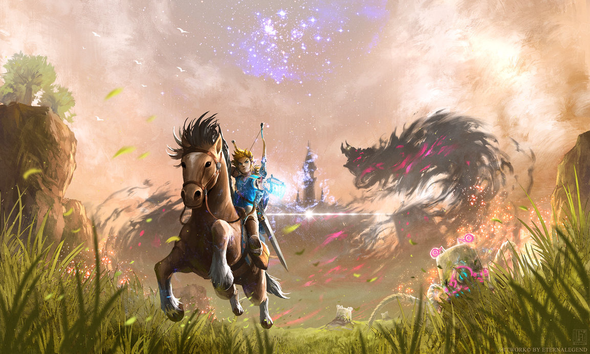
As Link sets off on his quest to defeat Ganon, he is asked to investigate the fate of the Divine Beasts and their former Champions. His ultimate goal, however, remains to reach the Calamity and free the trapped Princess Zelda before the whole world is laid to waste. But with the entire Kingdom of Hyrule before him to explore, it is up to Link himself to decide how he wishes to fulfill his foretold role as the Hero of the Wild.
To be continued...